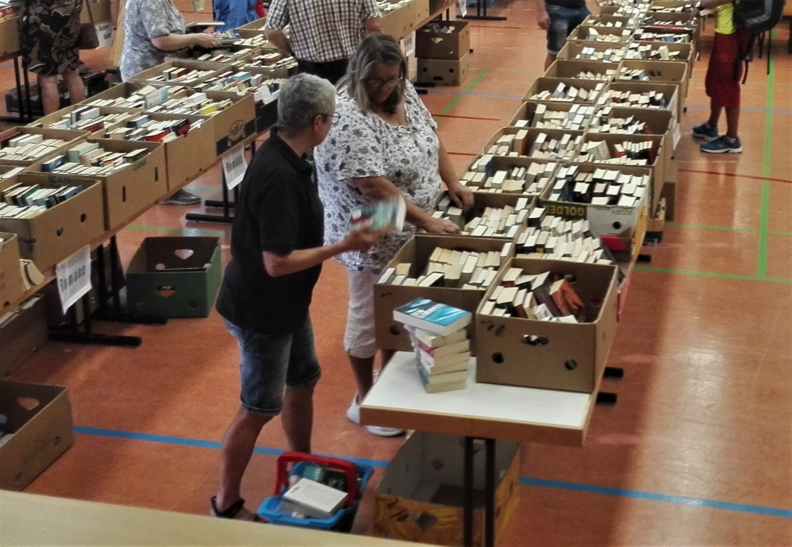
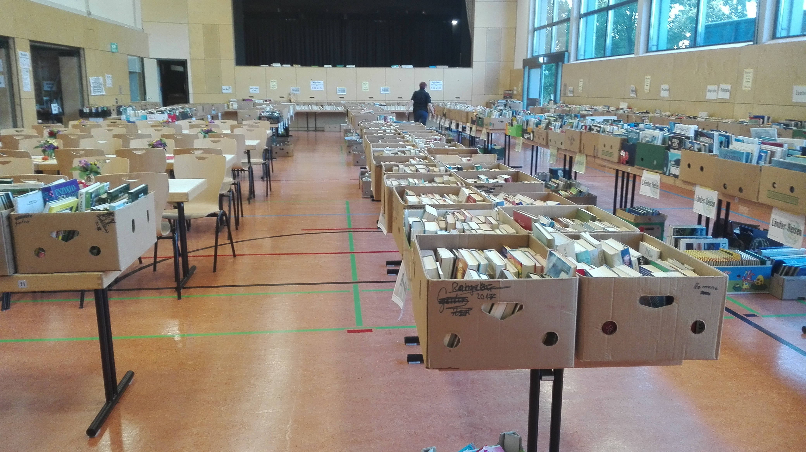
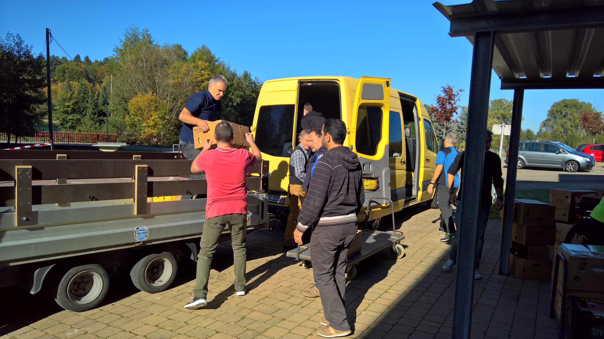

Unser Bücherflohmarkt - beliebt bei Alt und Jung

Termin für unseren nächsten Flohmarkt:
Samstag, den 17.9.2022
Sonntag, den 18.9.2022
in der Kämpfelbachhalle
Friedenstraße 25
75236 Kämpfelbach
Der Zugang zum Bücherflohmarkt ist
barrierefrei
Das Team der Bücherei Bilfingen freut sich,
ihnen tonnenweise gebrauchten Büchern
und anderen Medien anzubieten.
Stöbern sie an zwei Tagen durch unser
reichhaltiges Angebot und beschaffen sie
sich einen Lesevorrat und das alles zum
Kilopreis von 1 Euro
Gebrauchte gut erhaltene Bücher und
anderer Medien nehmen wir gerne
entgegen. Sie entlasten ihr Bücherregal und
schaffen Platz für Neues, gleichzeitig
unterstützen sie damit die Bücherei
Bilfingen.
Der Erlös dieser Verkäufe kommt der
Bücherei zugute, die damit neue Bücher
und andere Medien erwerben kann.
07232 3134 200
info@buecherei-bilfingen.de
Im oberen Foyer:
- Kinderbücher
- Bilderbücher
- Spiele
Im Saal und draußen:
- Romane & Belletristik
- Jugendbücher
- Fantasy
- Krimis
- Comics
- Filme & Hörbücher
- Musik CD’s und
Schallplatten
Sachbücher nach Themen sortiert:
- Biographien
- Esoterik & Spirituelles
- Fremdsprachige Bücher
- Geschichte
- Gesundheit & Medizin
- Kochen & Kulinarik
- Kunst & Kultur
- Lexika & Bildbände
- Pädagogik & Psyche
- Philosophie
- Politik & Gesellschaft
- Reisen & Läder
- Religion & Theologie
- Sprachen
Rückblick auf den 18. und 19.September 2021
Viele hatten schon lange darauf gewartet, nach Herzenslust in
den Auslagen des großen Bücherflohmarkts nach
Schnäppchen und tollem Lesematerial zu stöbern. Am
Samstag, den 18. September war es wieder so weit: Wir
öffneten den Flohmarkt in der Bilfinger Kämpfelbachhalle
und damit den erwarteten Bücherflohmarkt für zwei Tage.
Zum ersten Mal seit wir die Kämpfelbachhalle nutzen sind wir
auch „nach draußen gegangen“. Bereits vor der Halle
warteten mehr als 20 Meter Auslagen mit bunt gemischten
Themenbereichen auf alle „Gruschtler“.

Der Großteil der 20 Tonnen „heißer Ware“ war jedoch in der
Kämpfelbachhalle zu finden, sauber geordnet nach Themen
und Inhalten, wie es in den vergangenen Jahren auch der
Fall war. Dieses Mal platzierten wir die Kinderbücher und
Spiele im Foyer im oberen Stock. Die große Fläche ließ zu,
dass sich dort viele Kinder und Eltern trafen und immer
wieder kam es spontan vor, dass laut vorgelesen wurde und
alle Kinder dann gebannt lauschten, einfach wunderbar.
Unsere Besucher haben einige Tonnen an Büchern, Spielen, CDs und weiteren Medien nach Hause
getragen. Auch der Verkauf der Kuchen Überraschungspakete ist sehr gut angekommen, am Sonntag
wurden die letzten Pakete schon vor der Kaffeezeit mitgenommen.
Der Erlös des Flohmarkts kommt wie immer ausschließlich der Bücherei zugute und wird für die
Beschaffung neuer Medien benutzt. So haben unsere Leser*innen wieder etwas davon. Freuen sie sich
auf einen schönen Lese-Herbst und -Winter
Möglich wurde der Erfolg nur durch die große
Unterstützung, die wir erfahren haben. Wir bedanken uns
deshalb gerne und ausdrücklich bei allen die mithalfen
(zeitweise waren das bis zu 50 Personen). Vielen Dank auch
an alle, die Kuchen gespendet haben. Besonderer Dank gilt
auch dem Ehepaar Wessinger, die seit dem letzten
Flohmarkt fleißig Bücher gesammelt, gesichtet und sortiert
haben und auch die Planungen für den Flohmarkt schon im
vergangenen Jahr soweit vorbereitet hatten, dass das neue
Team auf eine gesunde Basis zurückgreifen konnte, die
dann nur in Einzelheiten verändert werden musste. Wir alle haben viel daraus gelernt.
